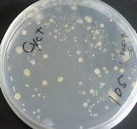

研究テーマ
花はなぜ咲くのか
多くの植物では、花粉は蜜や花粉を求めて訪れた動物の体に乗って、同じ種類の別の植物へ、時には何キロもの距離を運ばれます。その過程は「送粉」と呼ばれ、花粉を運ぶ動物を送粉者とよびます。花の多様性を創りだしてきた植物と送粉者の関係は、どのように進化し維持されているのでしょうか？
詳細はこちら 
花の上の微生物
栄養豊富な蜜や花粉の発芽床も備えた花は、微生物（おもに真菌・細菌）にとって理想的なハビタットです。農作物においては花を介して感染する病原微生物が古くから知られていましたが、花上の微生物は送粉生態学においてはほとんど注目されてきませんでした。もしかしたら送粉者は、花粉ばかりでなく病原微生物も運んでいるのかもしれません。
詳細はこちら
ボルネオの人と森
現在、地球上のあらゆる生態系が人間活動により危機に瀕しています。熱帯雨林ももっとも危機的状況にある生態系の１つです。この問題を理解するためには、人間活動の森林への直接的な影響ばかりでなく、長期的、間接的な影響や、生態系の劣化が及ぼす社会への影響をも評価する必要があります。
詳細はこちら